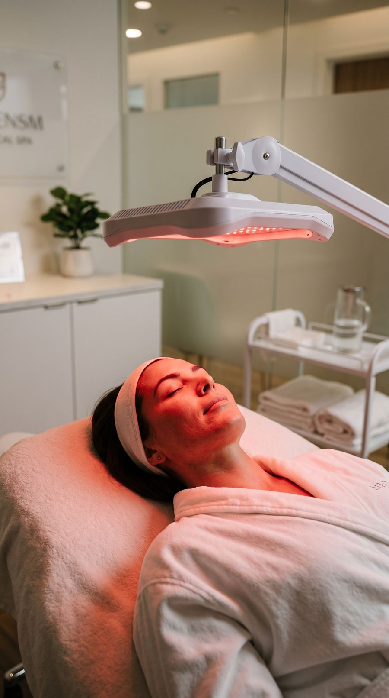
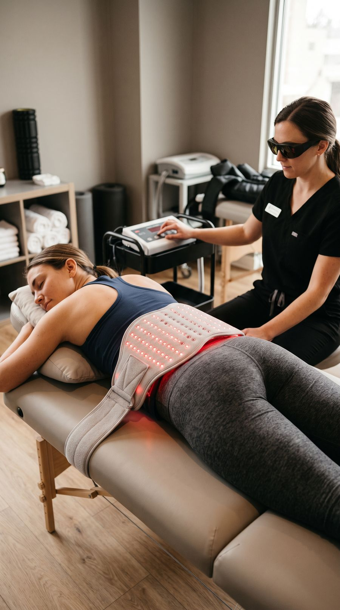
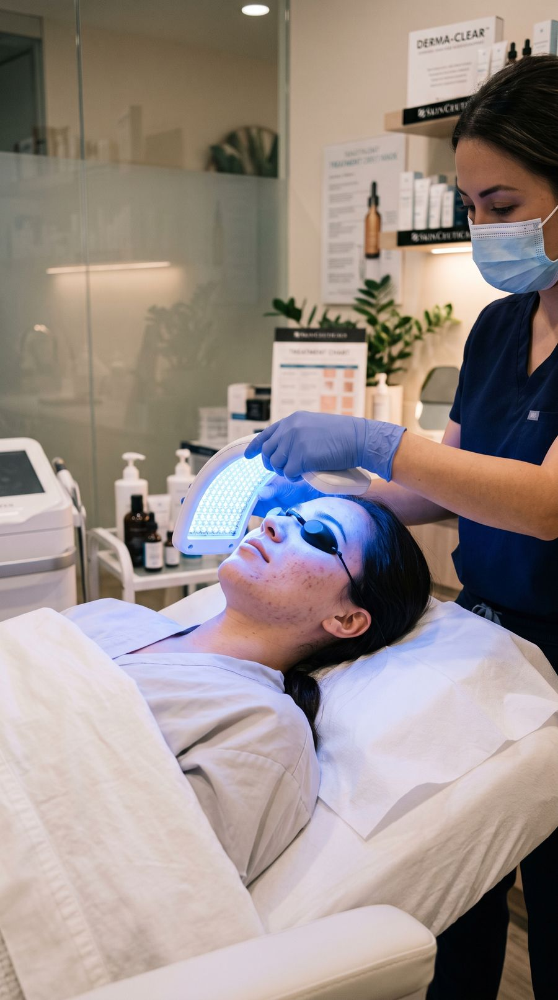
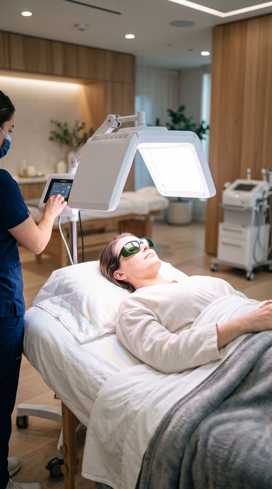

Discover Light Therapy
Light therapy isn't one thing — it's a family of treatments, each using a different part of the light spectrum to do a different job in the body. Tap through the wavelengths below to see how each one works.

Red Light Therapy · 620–700nm
Visible red light works just beneath the skin's surface, where it energises the cells responsible for collagen, circulation and tissue repair — making it the go-to wavelength for skin, wounds and surface-level recovery. Reaches ~1–2mm, the dermis layer. Best suited for wound & scar healing, skin rejuvenation, and mild inflammation.
Light meets the skin
A red-light panel is positioned over the treatment area. The visible red glow is gentle, painless and produces no heat damage.
Cells absorb the energy
Mitochondria — the “power plants” inside your cells — absorb red-light photons, which can boost their production of cellular energy (ATP).
Repair processes ramp up
With more energy available, cells increase collagen production, circulation improves and the local inflammatory response is supported.
Visible recovery over time
Across a course of sessions, many people notice smoother skin tone, faster-settling wounds and reduced surface inflammation.


Near-Infrared Therapy · 700–850nm
Near-infrared light is invisible to the eye but travels far deeper than red light — reaching muscle, joint and connective tissue at ~5–10mm. It's the wavelength most associated with deep-tissue recovery and pain relief. Best suited for muscle & joint recovery, deep tissue pain relief, and post-exercise recovery.
Deep-reaching light applied
Near-infrared panels deliver light that penetrates several millimetres into muscle and joint tissue — deeper than any visible wavelength.
Energy reaches deep cells
Cells in the deeper tissue absorb the infrared energy, supporting their metabolism and repair activity where injuries often sit.
Circulation & recovery supported
Blood flow to the area is encouraged, helping deliver oxygen and nutrients while supporting the body’s natural anti-inflammatory response.
Easing of deep discomfort
Over a treatment course, many clients report reduced deep-tissue soreness and improved mobility in stiff joints and muscles.


Blue Light Therapy · 400–500nm
Blue light barely travels past the outermost layer of skin (~0.5–1mm) — and that's exactly the point. It has natural antibacterial and calming effects, making it useful for surface skin concerns and blemish-prone skin. Best suited for surface skin conditions, antibacterial support, and calming inflammation.
Surface light applied
A blue-light source is directed at the skin. Because the wavelength is short, its effect stays right at the surface.
Targets blemish-causing bacteria
Blue light is absorbed by the bacteria involved in breakouts, helping to reduce their presence on the skin.
Inflammation is calmed
The treatment supports a calmer, less reactive skin surface, easing redness and irritation.
Clearer skin over time
Used regularly as part of a skincare plan, blue light can help maintain a clearer, more balanced complexion.
{kind=link}

Polarized Full-Spectrum Therapy · 400–2000nm
Polarized light therapy is the signature approach at Iridescence. It combines a broad band of wavelengths — visible and infrared — in a single non-laser, non-thermal treatment that works across multiple tissue depths at once. Best suited for whole-area injury treatment, combined surface + deep tissue support, and general recovery & pain relief.
Polarized light is delivered
Light waves are aligned in a single plane (polarized), then applied across the treatment area — gently and without heat.
Multiple depths engaged at once
Because it spans many wavelengths, the treatment reaches both the skin surface and deeper muscle and joint tissue in the same session.
Whole-area repair supported
Cells across the treated region absorb the light, supporting circulation, reduced inflammation and coordinated tissue repair.
Broad recovery benefit
This makes polarized therapy well-suited to complex or whole-area injuries where a single wavelength alone wouldn’t reach everything.
{kind=link}